Below are a few R&D projects that I’ve worked on as internal programs or products to sell. These projects contain a lot more moving parts and are less UI based, and more backend heavy.
Tangible Engine
I took over this project when the main programmer left and am responsible for versions 2.8 and 3.0.
This software has a C#/.Net backend that uses saved JSON patterns to recognize conductive tangible “pucks” when they are placed on a touch table. It uses TCP/IP calls to speak with frontend clients using the given bindings that come with the installer. Those bindings are in both Unity C# as well as Node.js.
The app runs as a service in the background, and utilizes the Windows tray for the main UI (programmed in WFP).
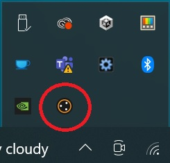
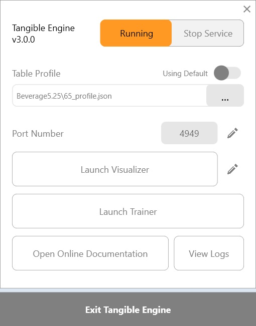
The software also comes with a Trainer application for saving patterns, as well as a Vizualizer to check that the patterns are recognized as well as view the information about each tangible (x & y positions, rotation, id).
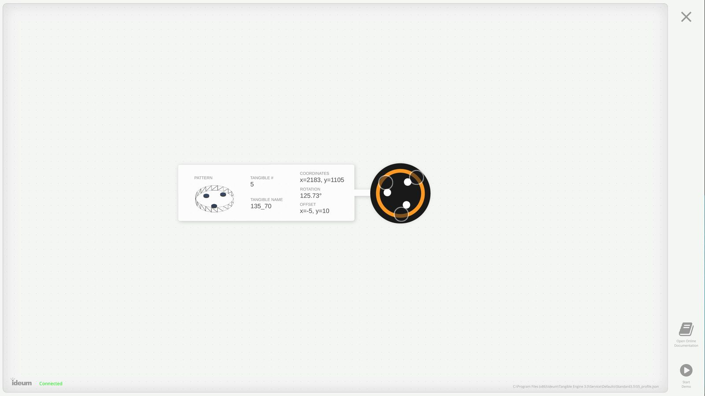
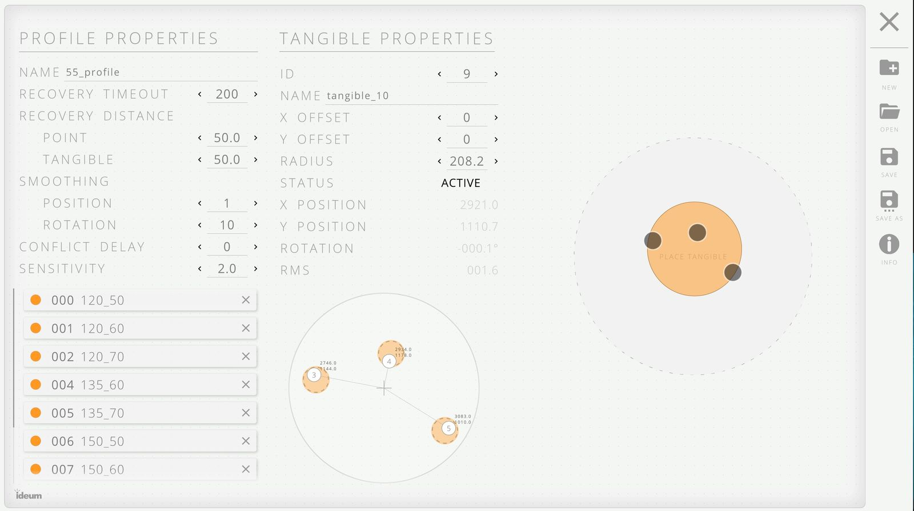
View more about this product here: https://www.tangibleengine.com
Tangible Engine Rapid Prototyping Tool
I am the creator and sole programmer of this application.
The Rapid Prototyping Tool started as a way to give clients a “no code solution” to making their own Tangible Engine applications.
Using a desktop editor, users can add up to 9 tangibles and design their own UI, adding their own text, images, videos, and even gifs.
When the user is finished, they can export the project as a portable installer and put that on the final touch table hardware.
- Unity, C#, NSIS, Tangible Engine bindings
Learn more about this product here: https://www.tangibleengine.com/rapid-prototyping-tool/about-rapid-prototyping-tool
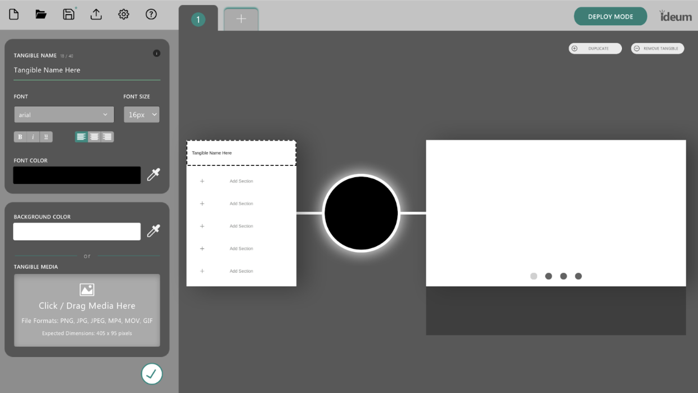
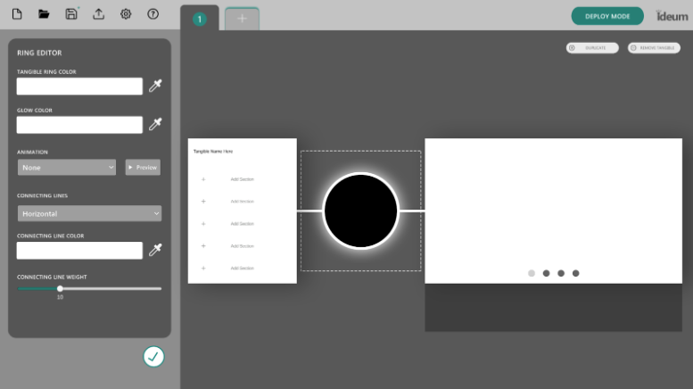
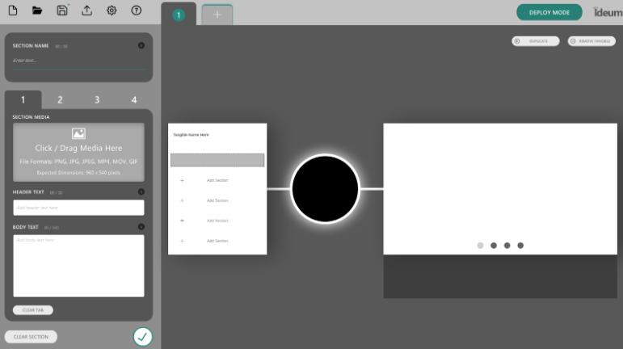
Audio Accessibility Layer
The Audio Accessibility Layer (AAL v1) was created a long time ago by a previous developer to help blind / visually impaired users play with our touch table applications, but it contained many bugs and was not super user friendly.
Trying to integrate the code into projects was a hassle and had to be different every time based on the content of the application.
I decided that something needed to be created to make it more plug-and-play, so I created a Unity plugin that was node based & multi-lingual to help with the issues that came with setting it up.
Now there is just one prefab that you place into the scene that automatically listens for the 3-finger gesture to activate the audio layer, and it goes straight into the language, volume, and speed settings. The node based scripts are then placed on existing game objects in the scene and are fed text data based on programmer setup data models.
Visuals of the correct gestures are also shown on screen as the instructions move through the tree-like structure, while TTS plays for the individual.
- C#/.Net backend, Unity plugin frontend, Text to Speech, Gestures
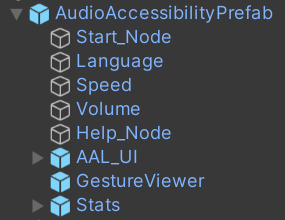
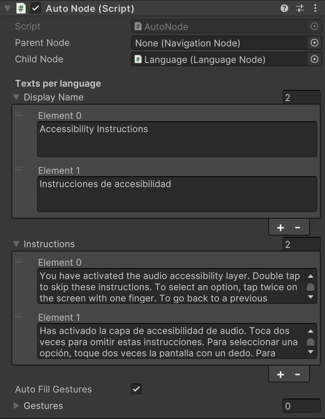
WatchDog
WatchDog is a file-watching application that opens other exe’s and batch scripts, closes file explporer, and keeps those programs open. If it sees that an application has closed or crashed, it will try to reopen that application. Only users with a keyboard and the original pin code can exit out of Watchdog and get back to the desktop.
It is useful for applications in museums and public facing experiences where the client/programmer doesn’t want users being able to close out of the main application and then start browsing the web or doing something they’re not supposed to do.
I am responsible for updating WatchDog to version 2.0, removing bugs, and adding new features such as the ability to run batch scripts, toggle “keep open” and “force forcus”, as well as added a delay startup to individual programs.
- C#/.Net, WPF, Windows Processes, JSON
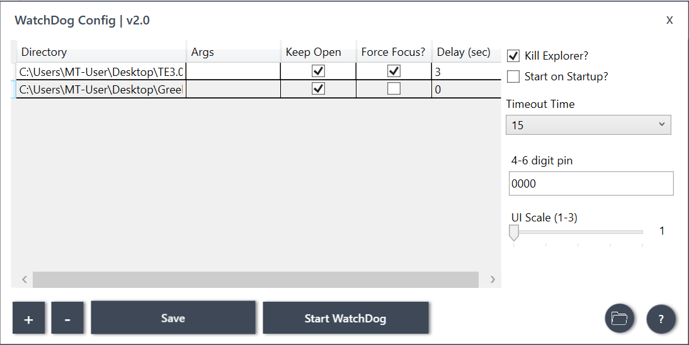
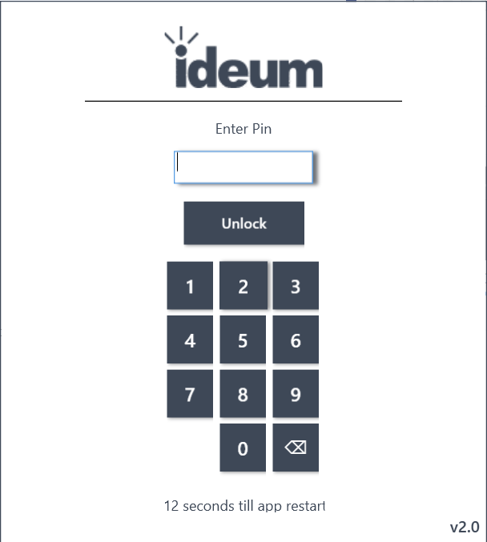